Perfiles y eficiencia
Los siete perfiles simulados como lentes sobre lo que hay hoy, el texto grande y el iPad, lo medido y lo supuesto sobre rendimiento, y los hallazgos que no llegan a problema prioritario.
Lente de perfiles sobre lo de hoy
Perfiles simulados, no entrevistas Riesgo de que ese perfil se trabe en esa parte. alto · medio · bajo.
| Perfil | 1 · Un sitio, nueve nombres | 2 · Lo que aceptas al activar | 3 · Volver a iCloud | 4 · Dos cuentas en una pantalla | 5 · Cuando algo falla | 6 · Esperas y «Ya casi está» | 7 · Dos filas y un estado que se contradice | 8 · Texto grande |
|---|---|---|---|---|---|---|---|---|
| P1 · Migrante de Excel Quiere sus datos «en algún sitio seguro» y una copia en Excel; desconfía de lo que no ve. | ¿dónde está? | no sabe lo de las fotos | ¿pierdo algo? | ¿qué es asociar? | lee de más | ¿y mis datos? | cree tener copia | — |
| P2 · Principiante abrumado No distingue iCloud, «la nube», «cuenta de Yala» ni «modo privado»; lee «migrar» como algo técnico. | nueve nombres | no abre detalles | «desvincular», «en pausa» | «desasociar» en naranja | párrafo técnico | «Sesión cerrada» | dos filas | — |
| P3 · Anotador rápido que no lee Toca el botón grande; no lee hojas largas ni «Ver los detalles». | «Migrar» asusta | acepta sin leer | toca «Empezar sin ellos» | toca el naranja | reintenta sin arreglar | sale a mitad | no entra | — |
| P4 · Experto de otra app Quiere saber quién ve sus datos, si hay cifrado y cómo salir; lee la letra pequeña. | ¿nube de quién? | lo busca plegado | la promesa no se cumple | callejón | copia el correo | — | estado partido | — |
| P5 · Llega por una invitación de grupo Ya tiene cuenta de Yala por Grupos; no sabe que es otra cosa que sus datos personales. | su cuenta ≠ «la nube» | — | «sin su grupo» | no sabe que es su cuenta | — | — | — | — |
| P6 · Varias monedas y tarjeta Muchos registros y fotos de recibos: lo que tarda y lo que no viaja le pesa más. | — | pierde sus recibos | datos previos | — | fallos de iCloud lleno | 1.537 sin plazo | — | — |
| P7 · Texto grande, a veces en iPad Texto de accesibilidad, VoiceOver; hojas largas y botones al fondo. | textos largos | hoja larga al abrir | globo de 9 pt | tres tarjetas largas | 394 caracteres | tres frases de gestos | dos pantallas | lee por una rendija |
Texto grande (AX3)
Las mismas pantallas con el texto de accesibilidad «AX3».
Lo que se ve aquí alimenta el problema 8. Se leen bien la hoja de quitar datos y los bloqueos; se aprietan la tarjeta de estado (icono + texto en fila), la hoja de activar (pie fijo) y los globos de decisión anclados a un botón («¿Borrarlos de tu iCloud?» ocupa toda la pantalla y su título se corta arriba). «Cancelar la activación» sale cortado.
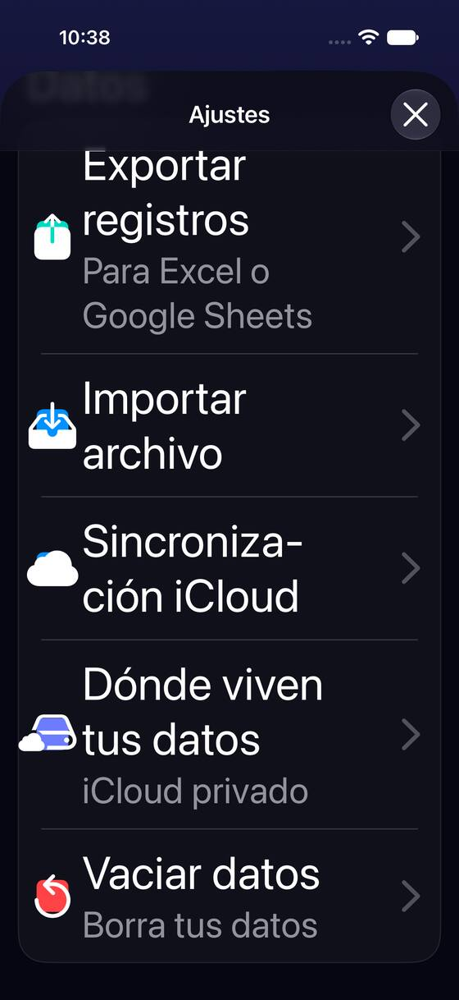
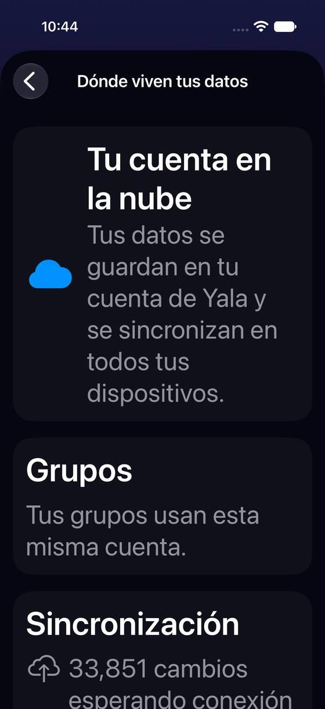
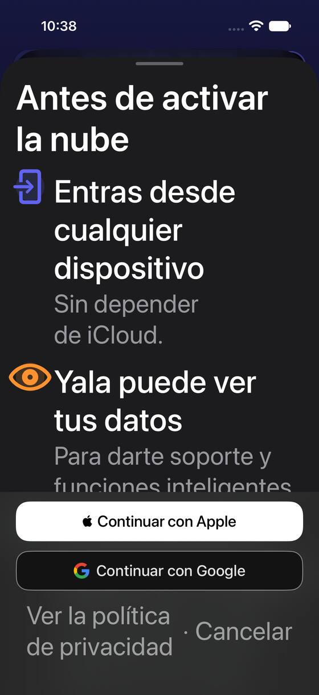
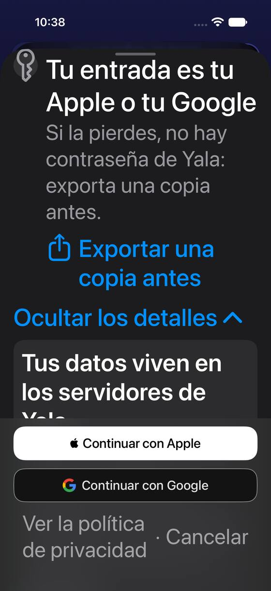
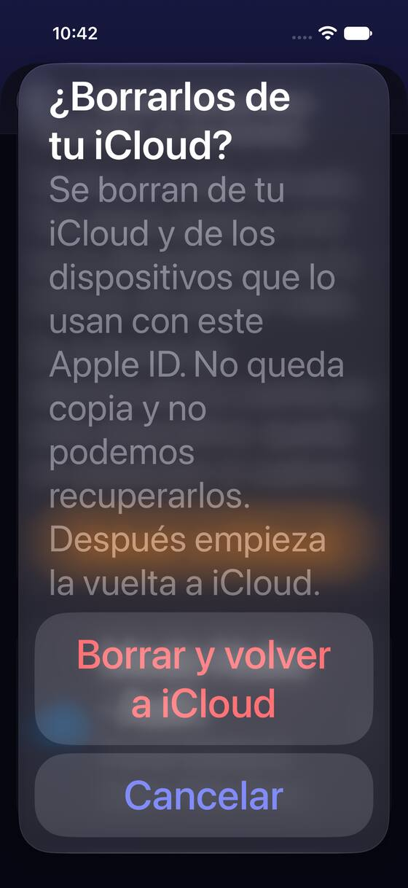
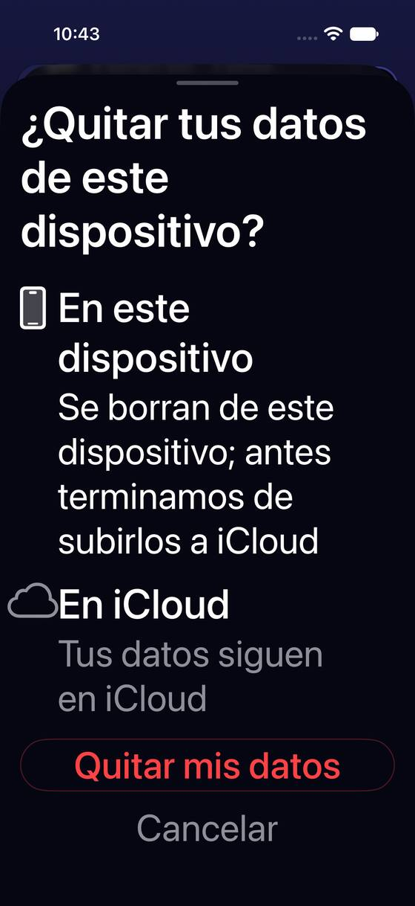
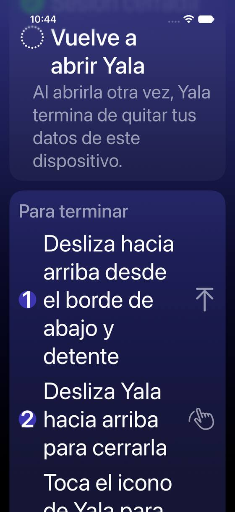
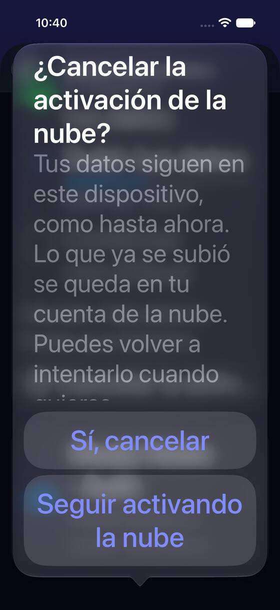
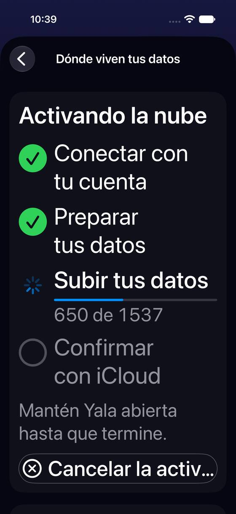
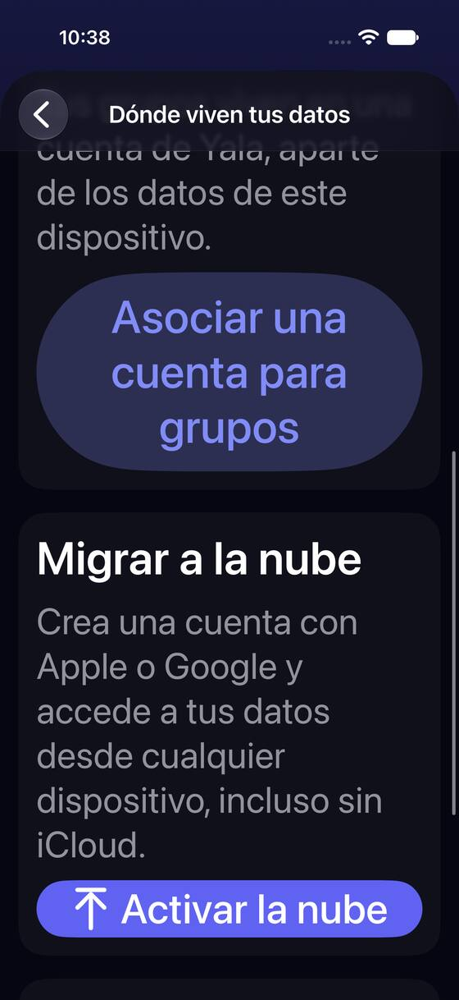
iPad
En el iPad Pro 13 todo cabe y se lee; las tarjetas ocupan la columna entera con textos de 11-12 pt. La hoja de activar sale centrada y su alto lo fija el pie, así que queda un hueco vacío en medio. Nada de esto llega a problema prioritario.
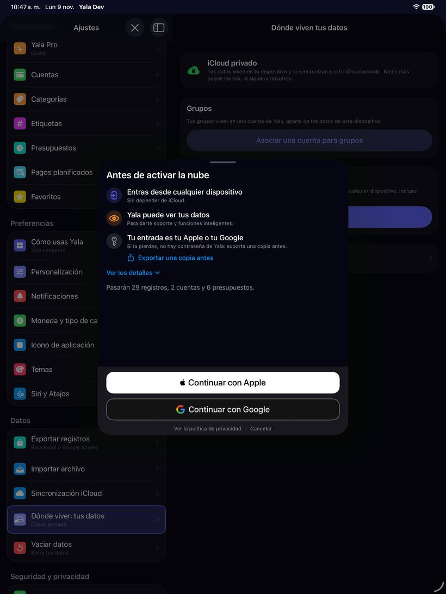
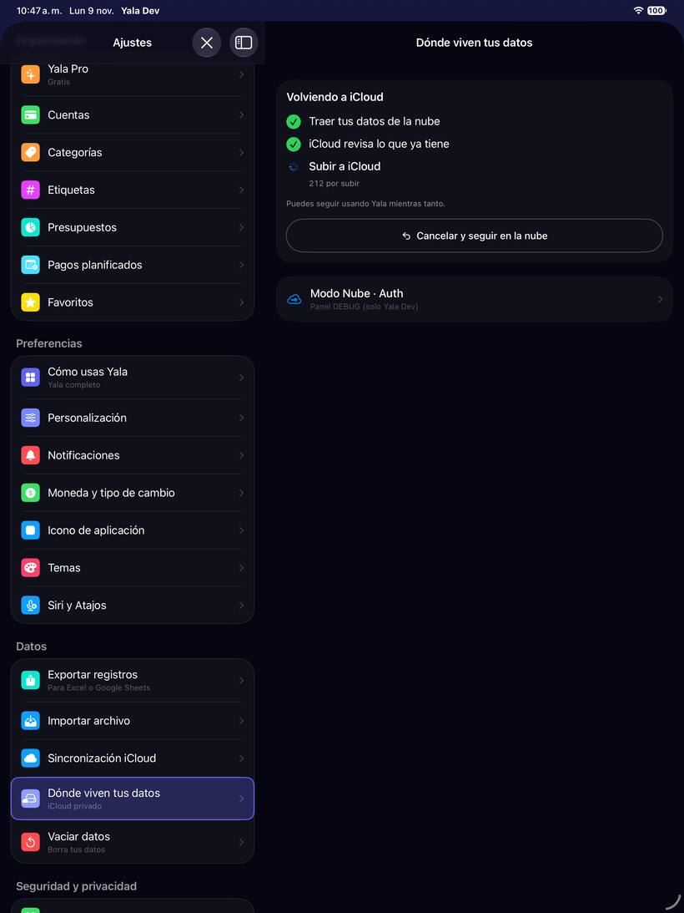
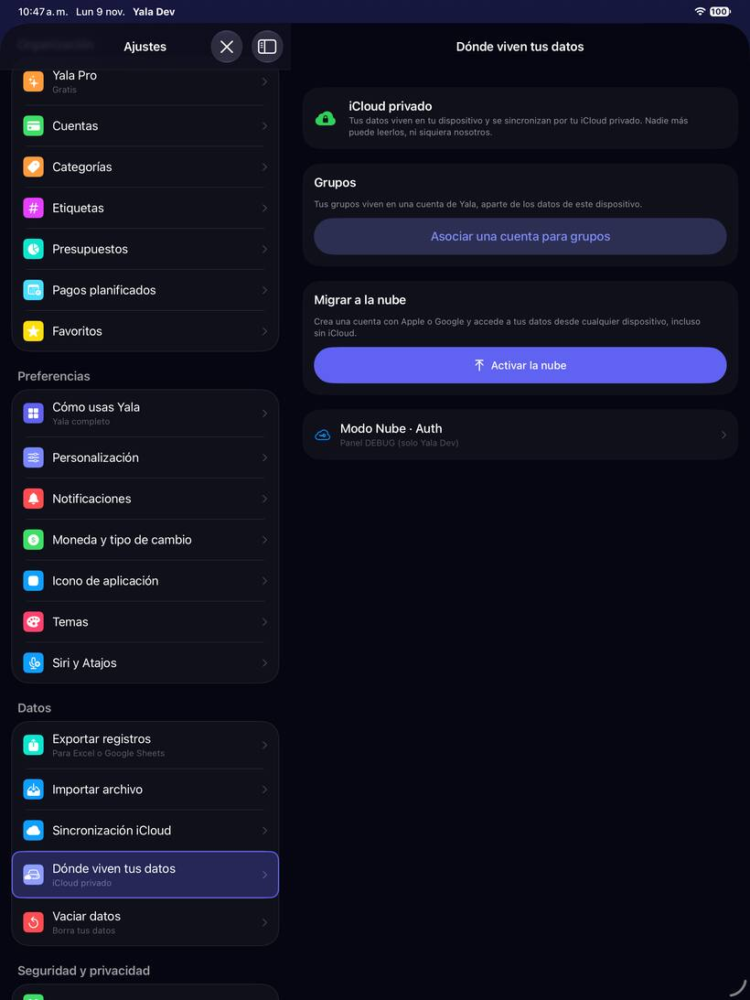
Eficiencia: lo medido
| Qué | Cifra | Cómo se midió |
|---|---|---|
| CPU de la app en reposo, Ajustes abierto (en iCloud) | 6,5 % (3,8 s de CPU en 59 s) | Simulador iPhone 17 Pro, iOS 27.2, Debug-Dev, semilla «realista». El conductor espera 60 s sin tocar nada; desde el Mac, ps lee cada 2 s el tiempo de CPU acumulado del proceso de la app. Una corrida. |
| Lo mismo con «Dónde viven tus datos» abierta (en iCloud) | 8,4 % (4,8 s en 57 s) | Igual, mismo proceso, a continuación. +1,9 puntos sobre Ajustes. |
| Ajustes abierto, en la nube | 8,0 % (4,6 s en 57 s) | Igual, con la cuenta nacida en la nube (gancho de prueba). |
| «Dónde viven tus datos» abierta, en la nube | 8,5 % (4,9 s en 57 s) | Igual. +0,5 puntos sobre Ajustes. |
Todo en Debug y en el simulador, que no es un iPhone en Release: sirve para comparar, no como coste real.
Eficiencia: hipótesis (sin medir)
Hipótesis Leído en el código. Ninguna es un refactor propuesto: son sitios a medir si se notan.
| Qué pasa | Dónde | Qué se espera y qué medir |
|---|---|---|
Con la pantalla abierta, un bucle relee cada segundo el diario de la migración, el aviso de iniciar sesión y la salud del motor (controller.refresh()), y cada 5 o 30 s empuja la migración. Además cambia cada segundo un refreshTick que ningún body lee (lo dice la propia regla de la casa). | StorageSettingsView, .task de las líneas 130-149; CloudMigrationController.refresh() (1987-2020) | Repinta solo si cambia algo, así que en reposo debería costar poco: ver la cifra medida. Con una migración en curso, medir con Instruments. |
Cada vez que se pinta la tarjeta de volver se cuenta en el almacén (reverseEligibility(): fetchCount de SyncIdentity); la de activar hace lo mismo con el marcador (markerDecision()). | StorageSettingsView.revertCard y migrateCard; CloudMigrationController 2253-2310 | Un recuento por pintado; con el bucle de arriba, a lo sumo uno por segundo si algo cambia. Bajo, salvo con muchos miles de filas. |
En la nube, cada guardado de cualquier contexto recuenta lo pendiente de subir (refreshPendingSyncCount). | syncStatusSection, .task sobre ModelContext.didSave | Con una importación grande (miles de guardados) puede encadenar recuentos; medir al importar. |
| Mientras se espera la vuelta a iCloud, cada observación recorre dos veces todas las filas en el hilo principal. | Ya tiene ticket: reverse-upload-sample-walks-every-row-twice-on-the-main-thread | Engancha la pantalla cada 30 s con muchos movimientos (según el ticket; no medido en un iPhone). |
| Fuera de esta zona: la app gasta 6-8 % de CPU sin que nadie toque nada, ya con Ajustes abierto (medido arriba). En Debug y en el simulador; puede ser el propio modo de depuración. | Proceso entero, no esta pantalla | Medir en Release en un iPhone con Instruments (Time Profiler) antes de abrir nada: si se repite, es un ticket aparte. |
Hallazgos secundarios
No llegan a problema prioritario (o ya van dentro de uno). Severidad: alta · media · baja.
| Hallazgo | Evidencia | |
|---|---|---|
| «Activar sin borrar»: con un borrado de iCloud a medias, activar la nube lo cancela. La decisión se toma en un globo pequeño anclado al botón, y «sin borrar» no dice qué no se borra (tus datos de iCloud se quedan). Toca datos: para tu tarjeta. | Captura s03; storage.pendingICloudWipe.* | |
| El selector dice «Iniciar sesión con Apple» y la hoja de activar «Continuar con Apple», para el mismo gesto; el selector añade «Otra cuenta de Apple» sin explicar cuándo usarla. | Capturas b05 y h01 | |
| Las cifras salen con tres formatos: «650 de 1537», «5,006 cambios» y «1.537» en la propuesta. | Capturas p-upload y n06; storage.steps.uploadedCount | |
| El consentimiento manda a «Ajustes → Exportar datos», y esa fila se llama «Exportar registros» (en solo grupos, «Exportar datos», apagada). | Capturas c02, a02 y r02; storage.consent.pointAccess | |
| «Cancelar la activación» y «Cancelar y seguir en la nube» abren globos anclados al botón con «Sí, cancelar» y «Seguir activando la nube»: «Sí, cancelar» no dice qué se cancela. | Capturas p-upload-cancelar y p-reverseUpload-cancelar | |
La nota de «cuenta rechazada» se pinta como TEXTO en naranja (warningForeground); la regla de la casa lo reserva para iconos por contraste (en el tema oscuro se lee; en claro no llega a AA). | Captura b02; StorageSettingsView.migrateCard | |
| En un fallo de la activación, la tarjeta «Grupos» con «Asociar una cuenta para grupos» queda justo debajo del error, con el mismo peso. | Captura p-fallo | |
| «Salir de mis grupos»: «Salidos», «Transferidos» y «Sin procesar» son palabras internas; «Puedes retomarlo… desde «Vaciar datos»» manda a una fila distinta de la que se usó (Ajustes de Grupos). | Captura g02; settings.batchLeave* | |
| «Desasociar» lleva a una hoja con «Conservar los gastos que pagué» / «Quitarlo todo del Panel»: la diferencia entre las dos solo la explica un párrafo largo encima. | storage.groups.detachBody (no capturada) | |
«Sincronización iCloud» en la versión de Yala Dev enseña paneles de QA y de depuración: comprobar que ninguno llega a TestFlight (están tras #if DEV_BUILD y #if DEBUG). | Capturas i01 e i02 |
Lo que ya está bien
- «¿Quitar tus datos de este dispositivo?» dice dónde queda cada cosa (este dispositivo, iCloud, grupos) y cómo recuperarlos.
- Si faltan cambios por subir a iCloud, el cierre avisa y ofrece «Exportar mis registros» o «Esperar» antes de quitar nada.
- Los pasos con su cifra (opción B) dicen qué está pasando y quién espera a quién («iCloud todavía está trayendo tus datos…»).
- Cada cancelación pide confirmación y dice dónde siguen los datos.
- «Volver a Yala completo» enseña cuántos registros hay, en qué fechas, y su «Empezar de cero» confirma con las cifras de lo que se borra.
- Antes de volver a iCloud, la app mira si ya hay datos ahí y pregunta en vez de mezclarlos sin avisar.
Fuentes: código de origin/2.3 y capturas del 9-nov-2026.